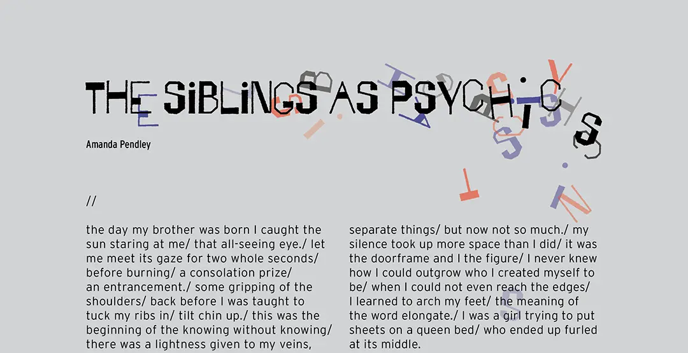
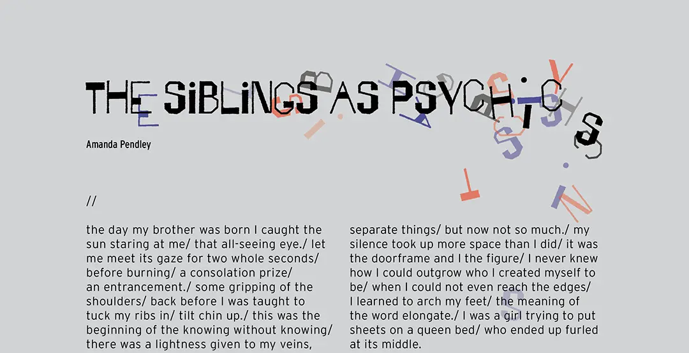

The Siblings as Psychics
Fools Vol. 11
![Mockup of a three-page magazine spread called 'The Siblings as Psychics.' Pages two and three have facing
illustrations of a brother and sister. The brother, on the left, is made of black scribbles with a red core where
his heart would be. The vague form of his figure is sitting against a wall. The sister is also sitting against a wall,
but she is made of grey scribbles barely visible on the background. There are red and blue scribbles like veins throughout
her body. She's reaching out for something.](../images/gigs/fools-vol12/5.webp) 

Amanda Pendley · January 21, 2022
//
the day my brother was born I caught the sun staring at me/ that all-seeing eye./ let me meet its gaze for two
whole seconds/ before burning/ a consolation prize/an entrancement./ some gripping of the shoulders/ back before
I was taught to tuck my ribs in/ tilt chin up./ this was the beginning of the knowing without knowing/ there was
a lightness given to my veins, some ability to absorb that jumpstarted my magnetism to nurture. I sucked all of
it to me/ those who loved so hard it hurt/ grief personified in the human face/ the world was screaming violet/
a burnt plum of warning/ I held that pain hostage/ I never learned to let go.
//
I did not meet my brother on his birthday/ my mother barely met my brother on his birthday/ there were balloons
disguised as blood pumps, that wide open candle blow/ that screaming for dear life/ that gift of life/ I never
knew that gifts could have expiration dates/ I have spent the last twenty-one years hoping that his would not be
tomorrow.
//
I learned how to dance by the tiptoe tradition of sneaking past/ my parents fallen asleep in the armchair/ with
my brother at their chests/ I was not quiet out of fear/ I was quiet for the sake of others/ which were then
separate things/ but now not so much./ my silence took up more space than I did/ it was the doorframe and I the
figure/ I never knew how I could outgrow who I created myself to be/ when I could not even reach the edges/ I
learned to arch my feet/ the meaning of the word elongate./ I was a girl trying to put sheets on a queen bed/ who
ended up furled at its middle.
//
my own birth was less traumatic/ the twenty-sixth of May/ emergency surgery/ a quarter sized hole in the roof
of my mouth/ hospital room hotels/ ears ringing./ I was taken to the speech pathologist/ my mother spoke to the
doctor with the worried tone of a woman whose only wish was to hear her daughter call her mother./ I held the
world captive on the tip of my tongue, refusing to let go/ the girl with a void for a voice.
//
my brother and I were raised on my mother’s Diet Coke addiction and leftover mentos on the kitchen counter/ he
himself was a human explosive/ both of love and of rage./ when he gets too upset his memory is wiped clean/ he
throws chairs and pushes tables and rips apart everything he can get his hands on/ and then he will run out of
energy, sit back, rub his eyes, and open them to confusion/ who possibly could have done this?/ he does not
remember/ I stand in the corner with my head covered./ my mouth tastes of mint and stinging carbonation/ it was
only a matter of time before I would unravel too/ my brother has anger/ I have the art of a sob/ whittled into a
cry so faint, you can barely hear it slip out.
//
our childhood was blood/ water/ skin/ ripped open and open again/ my mother and I once came home to my brother
sitting in front of the tv with a fistful of teeth/ cascading blood/ wrenched out youth/ open-armed gauze/
cradling/ swaddling./ we lived within a home that he destroyed and I mended/ a home of covered ears and eerie
quiet/ bruised knees and a fear of violence/ I would give anything to read the invisible ink on those walls/ to
recount the birth of my own clairsentience/ gripped in an out of body pain/ collapsed on the shower floor/ the
two of us, a ripped envelope/ the shrieking peel of a wax strip/ making our own entry wounds/ exit wounds/ so
that we can leave when we choose/ except we can’t.
//
I walked into the world like I expected attack/ my brother simply turned himself off and back on again/ invented
his hum/ loud and persistent/ it carried him through on a wave/ my mother and I agreed on a theory on its origin/
that when he was a baby the ringing in his ears was so prominent that he began to mimic it/ replicating that
bumbling rhythm, that boisterous noise aloud/ tapped into some unknown somewhere./ some cosmic radio/ that lets
him see beyond.
//
and we are both rewriting and rewriting ourselves until we get the cadence right, until we cut through to the
pulse of it all/ when I look at my brother/ I see a beating heart/ when he looks at me he sees veins coursing
with metallic gold/ pumping/ and flowing/ juxtaposition of future death/ whenever he draws something for me it
is one color taking up the whole page/ with a tiny bit of red at the middle/ a stringy and lopsided mass./ I think
my skin is see-through/ bursting/ flooding out of my arms beyond my wingspan/ I have trouble staying in my body/
I miss too deep/ I become a vacuum sucking everything in sight into my arms to replace his weight.
//
I often relapse/ come home stumbling into the arms of anyone who is willing to get crushed/ by a loneliness/ in
its girl body/ everyone tells me your brother is not going to die yet/ but he’s not going to get to live either/
after high school he will spend the rest of his life folding towels or bagging groceries/ because it’s all he can
do/ waiting for me to come home to him/ while I am out not drowning/ driving cars/ but not off bridges/ kissing my
friends on their cheeks/ saying people’s names whom I love again and again into the wind.
//
I hope he catches it in the air/ tunes in to that radio station every night./ when he was a little boy he would go
limp when he didn’t get his way/ I would have to hoist him up by his middle/ and he would shoot his arms up and try
to slither down out of my grasp/ I know he doesn’t mean it/ but I feel that ache now/ of sand slipping through my
fingers/ time running thin./ I think of us as children/ running barefoot on the hot road/ under a blazing sun/ I
would hang Ry upside down and he would scream and giggle until he caught his breath/ I want to breathe that back in/
hold it for ransom/ I would make the most sinister of deals with my non-god/ not to let it go.